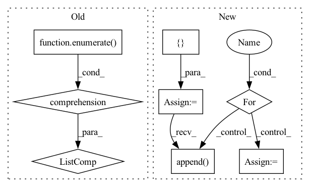

Pattern ID :19461

Before Change
frames = self._segment(blob)
return [dict(offset=idx, weight=1.0, blob=frame)
for idx, frame in enumerate(frames)]
After Change
channel_frames = self._segment(blob)
chunks = []
channel_tags = ("mono",) if len(channel_frames) == 1 else ("left", "right")
for frames, tag in zip(channel_frames, channel_tags):
start = 0
for idx, frame in enumerate(frames):
chunks.append(dict(offset=idx, weight=1.0, blob=frame, location=[start, start + len(frame)],
tags={"channel": tag}))
start += self.hop_length
return chunks
In pattern: SUPERPATTERN
Frequency: 3
Non-data size: 8
Instances
Fragment ID: 63439405
Project Name: jina-ai/jina-hub
Commit Name: 4ec8186e143ef359b87068cd6b92f7cc43b07cc9
Time: 2021-05-20
Author: 67507873+shakurshams@users.noreply.github.com
File Name: segmenters/audio/SlidingWindowAudioSlicer/__init__.py
M Class Name: SlidingWindowAudioSlicer
N Class Name: SlidingWindowAudioSlicer
M Method Name: segment(2)
N Method Name: segment(2)
M Parent Class: BaseSegmenter
N Parent Class: BaseSegmenter
M File Name: segmenters/audio/SlidingWindowAudioSlicer/__init__.py
N File Name: segmenters/audio/SlidingWindowAudioSlicer/__init__.py
M Start Line: 52
M End Line: 55
N Start Line: 53
N End Line: 66
'>
Before Change
frames = self._segment(blob)
return [dict(offset=idx, weight=1.0, blob=frame)
for idx, frame in enumerate(frames)]
After Change
channel_frames = self._segment(blob)
chunks = []
channel_tags = ("mono",) if len(channel_frames) == 1 else ("left", "right")
for frames, tag in zip(channel_frames, channel_tags):
start = 0
for idx, frame in enumerate(frames):
chunks.append(dict(offset=idx, weight=1.0, blob=frame, location=[start, start + len(frame)],
tags={"channel": tag}))
start += self.hop_length
return chunks
'>
Fragment ID: 63439406
Project Name: jina-ai/jina-hub
Commit Name: 0b5a13e9845d178622ff5b92242b824ee84a84e0
Time: 2021-05-20
Author: 67507873+shakurshams@users.noreply.github.com
File Name: segmenters/audio/AudioSlicer/__init__.py
M Class Name: AudioSlicer
N Class Name: AudioSlicer
M Method Name: segment(2)
N Method Name: segment(2)
M Parent Class: BaseSegmenter
N Parent Class: BaseSegmenter
M File Name: segmenters/audio/AudioSlicer/__init__.py
N File Name: segmenters/audio/AudioSlicer/__init__.py
M Start Line: 46
M End Line: 49
N Start Line: 47
N End Line: 60
'>
Before Change
world_size = len(worker_keys)
port = 23456 // pick a free port?
futures = [
client.submit(
dispatch_with_ddp,
pytorch_function=pytorch_function,
master_addr=host,
master_port=port,
rank=idx,
world_size=world_size,
*args,
backend=backend,
workers=[w],
**kwargs
)
for idx, w in enumerate(worker_keys)
]
return futures
After Change
world_size = len(all_workers)
port = 23456 // pick a free port?
host = all_workers[0]["host"]
futures = []
for worker in all_workers:
if pass_local_rank:
fut = client.submit(
dispatch_with_ddp,
pytorch_function=pytorch_function,
master_addr=host,
master_port=port,
rank=worker["global_rank"],
world_size=world_size,
*args,
local_rank=worker["local_rank"],
backend=backend,
workers=[worker["worker"]],
**kwargs
)
else:
fut = client.submit(
dispatch_with_ddp,
pytorch_function=pytorch_function,
master_addr=host,
master_port=port,
rank=worker["global_rank"],
world_size=world_size,
*args,
local_rank=worker["local_rank"],
backend=backend,
workers=[worker["worker"]],
**kwargs
)
futures.append(fut)
return futures
// pylint: disable=too-many-arguments
'>
Fragment ID: 63439409
Project Name: saturncloud/dask-pytorch-ddp
Commit Name: 6c295bcfc487962dfcff4ae476582e4c1a8bc951
Time: 2021-02-08
Author: hugo@illconditioned.com
File Name: dask_pytorch_ddp/dispatch.py
M Class Name: AnonimousClass
N Class Name: AnonimousClass
M Method Name: run(2)
N Method Name: run(2)
M Parent Class:
N Parent Class:
M File Name: dask_pytorch_ddp/dispatch.py
N File Name: dask_pytorch_ddp/dispatch.py
M Start Line: 27
M End Line: 45
N Start Line: 54
N End Line: 89